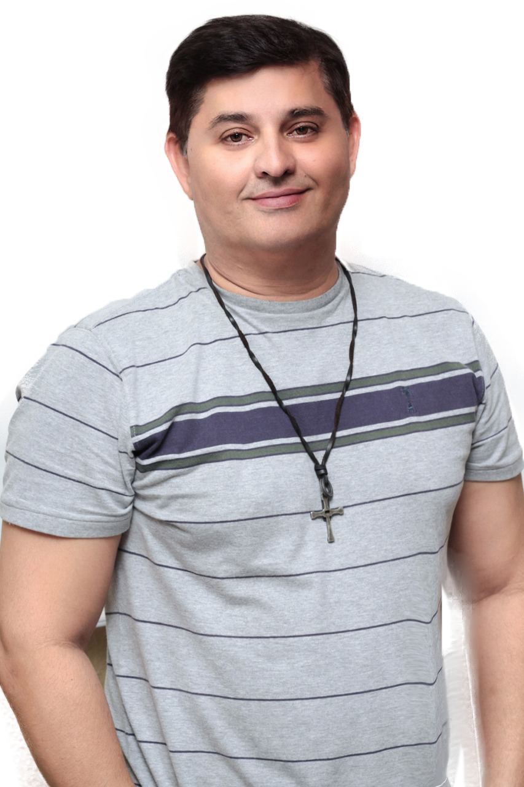

Professor Carlos Alberto Gonçalves da Silva
Professor Carlos Alberto Gonçalves da Silva, Possui graduação em Letras, mestre em Letras, área de concentração Estudos Lingüísticos, da Universidade Federal de Mato Grosso do Sul, Campus de Três Lagoas, nível Mestrado, Atualmente é Professor Universitário do CEETEPS - FATEC - nas modalidades de Ensino Presencial e Ensino à Distância EaD. Professor de Língua Inglesa I, III e V na Fundação Educacional de Fernandópolis - FEF. Tem experiência na área de Letras, com ênfase no ensino de Língua Inglesa, Lingua Inglesa: Prática Oral, Inglês Instrumental e Linguística. No ano de 2009 trabalhou com tutor on line Casa Thomas Jefferson. É fluente na Língua Inglesa. (Texto informado pelo autor)
Quem sou eu?
Tiago Haustin Dani Francisco Atualmente morador de Jales/São Paulo,morava anteriormente na cidade de Campinas/São Paulo. Decidi cursar o curso de Sistemas para internet por ser um setor em alta nos últimos 4 a 5 anos com alta taxa de empregabilidade, além disto quero explorar alguns potenciais em outras áreas que já tenho conhecimento, para isto preciso integrar os conhecimentos em um único produto que pretendo desenvolver. Além desta área ligado a Tecnologia, gosto e tenho como hobbies desenvolver planos financeiros comportamentais isto fez que eu voltasse a estudar também em conjunto a Fatec, o mercado financeiro. A intenção que até acabar o curso que una ambos os conhecimentos e vivencias na práticas e crie um produto bom para o setor, dando empregabilidade e tenha um crescimento exponencial para empresa em Jales.
Who I am ?
I am living in Jales – SP nowadays, but before I used to live in Campinas SP. I decided to take Internet Systems course because it was a high sector in the last 4 to 5 years with a high rate of employability, besides I want to explore some potential in other areas that I already know, so I need to integrate knowledge into a single product which I intend to develop. In addition to this area connected to Technology, I like and I have hobbies to develop financial behavioral plans; and that’s why I also study along with Fatec the financial market. The intention is that at the end of the course I am able to unite both knowledge and experiences in the practices and create a good product for the sector, giving employability and have an exponential growth for company in Jales.